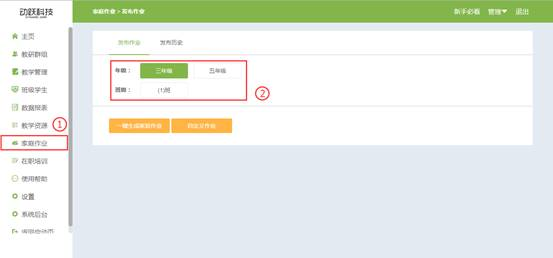

教师在电脑PC端布置家庭作业方法
视频教程：
1. 登录动跃体育教学管理平台后，进入平台操作界面。
2.点击进入【教学管理】 ,进入后，点击【家庭作业】，进入家庭作业页面。

3.进入家庭作业页面，布置家庭作业的方法有两种，一键生成家庭作业或自定义生成家庭作业。

4.自定义生成家庭作业：选择需要布置家庭作业的年级班级后，点击自定义家庭作业，下方展示作业选项，点击添加作业详细内容，教师根据上课进度以及学生的水平，自己选择所需要的家庭作业内容及强度。
5.在作业选项的内容中，点击左边的视频按钮，弹出窗口，点击左侧的运动分类，选择该类别下，需要布置的家庭作业的内容，点击成功后，系统直接关闭窗口，页面上显示家庭作业的内容。
6.选择视频完成后，输入作业强度，教师根据学生身体素质情况来填写适宜学生锻炼的强度，该项作业选择完成后，点击添加作业，继续以上的步骤，完成教师所需要的所有作业内容；若对选择的内容不满意，则按右边的删除按钮，之后重新添加。
7.添加完成后，若需要更换家庭作业，可点击左侧的视频按钮，也可点击删除后，再重新添加家庭作业，教师确认好需要布置的作业后，点击发布，即成功发布家庭作业。
8. 一键生成家庭作业：系统根据教师授课教案，自动生成学生的家庭作业。选择需要布置家庭作业的年级班级，点击一键生成家庭作业，点击确认即可一键生成家庭作业。
9.点击【发布历史】，选择年龄班级后，可查看到以前发布过的作业内容，方便老师查找与对比。
10.点击【作业完成情况】，选择年级和班级后，教师即可查看班级中完成作业的学生的实际情况，教师可实时掌握学生的情况。
11.点击【班级作业统计】，选择年级后，可查看到学校同一年级，不同班级完成作业情况的对比情况，方便教师统计数据。